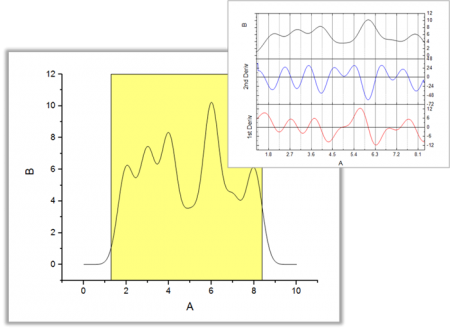

Minitool Differenzieren
Gadget-Differentiate
Übersicht
Das Minitool Differenzieren bietet ein schnelles Hilfsmittel zum Berechnen und Anzeigen von Ableitungskurven im Bereich der grafischen Datenauswahl ROI (Region of Interest).
-
- 
Mit diesem Minitool können Anwender:
- den zu differenzierenden Datenbereich verschieben und in der Größe verändern,
- die gewünschte Ableitungsordnung festlegen,
- die Ableitungskurve entlang einer Grafik der Daten anzeigen,
- die Ableitungskurve in einem Arbeitsblatt ausgeben.
Minitool Differenzieren verwenden
Um dieses Hilfsmittel zu verwenden, wählen Sie bei aktivem Diagramm Minitools: Differenzieren im Origin-Menü.
Dialogeinstellungen
Dieses Dialogfeld kann über das Origin-Menü geöffnet werden, und zwar unter Minitools: Differenzieren, oder Sie können Einstellungen im Ausklappmenü der grafischen Datenauswahl auswählen.
| ROI-Feld |
Toolname zeigen
- Legen Sie fest, ob der Name des Hilfsmittels oben in der grafischen Datenauswahl gezeigt werden soll.
Füllfarbe
- Legt die Füllfarbe der grafischen Datenauswahl (ROI-Feld) fest.
Linienfarbe der Ableitung
- Legt die Linienfarbe der Ableitungskurve fest.
|
| Ableitungsordnung |
Legen Sie die Ableitungsordnung fest. Neben dieser Option können Sie auch die erste und zweite Ableitungskurve im Ausklappmenü der grafischen Datenauswahl ROI aufrufen. |
| Glätten |
Savitzky-Golay
- Aktivieren Sie dieses Kontrollkästchen, um die Savitzky-Golay-Glättung anzuwenden, die eine lokale polynomiale Regression um jeden Punkt durchführt und so die Ableitungen sucht.
Polynomielle Ordnung
- Legt die polynomiale Ordnung für die Savitzky-Golay-Glättung fest. Beachten Sie, dass dieser Wert nicht kleiner sein kann als die Ableitungsordnung.
Punkte der Fenster
- Legt die Anzahl der Punkte in dem beweglichen Fenster fest, das für die Savitzky-Golay-Glättungsmethode verwendet wird.
|
Das Ausklappmenü
Klicken Sie auf die dreieckige Schaltfläche  in der oberen rechten Ecke der grafischen Datenauswahl, um das Ausklappmenü mit den folgenden Optionen zu öffnen:
in der oberen rechten Ecke der grafischen Datenauswahl, um das Ausklappmenü mit den folgenden Optionen zu öffnen:
| Grafische Datenauswahl löschen und Ableitungsdiagramm beibehalten |
Diese Option schließt das Minitool der Differenziation, behält aber das Ableitungskurvenfenster bei. |
| Ableitungsdiagramm bei geschlossener grafischer Datenauswahl beibehalten |
Legt fest, ob das Ableitungskurvenfenster gelöscht wird, wenn Sie das Minitool durch Klicken auf die Schaltfläche "x" oben recht in der grafischen Datenauswahl schließen. |
| Daten ändern |
Ändert die Anpassungsdaten/das Anpassungsdiagramm. Standard ist, dass alle Zeichnungen im aktuellen Layer ausgewählt sind.
- Deaktivieren Sie das Häkchen vor Alle Zeichnungen, um sie alle zu deaktivieren.
- Positionieren Sie das Häkchen vor einer bestimmten Zeichnung, um diese Zeichnung zu aktivieren.
- Klicken Sie auf Auswählen oder Mehr..., um den Dialog Diagramme auswählen aufzurufen und mehrere Zeichnungen auszuwählen.
- Wenn Auto aktiviert ist, wird die Zeichnungsauswahl gesteuert, indem auf eine Zeichnung im Diagrammfenster oder in der Objektverwaltung geklickt wird.
|
| Auf gesamten Diagrammbereich erweitern |
Erweitert die grafische Datenauswahl auf den gesamten Diagrammbereich. |
| 1./2. Ableitung zeigen |
Zeigt die erste und zweite Ableitungskurve. |
| Design speichern |
Speichert die Einstellungen als Design. |
| Design laden |
Designeinstellungen laden |
| Einstellungen |
Öffnet das Dialogfeld Differenzieren Einstellungen. |
Beispiel
- Erstellen Sie ein neues Arbeitsblatt und importieren Sie die Daten HiddenPeaks.dat aus dem Ordner <Origin-Programmordner>\Samples\Spectroscopy. Markieren Sie die Spalte B und klicken Sie auf
 auf der Symbolleiste 2D-Grafiken, um ein Liniendiagramm zu erstellen.
auf der Symbolleiste 2D-Grafiken, um ein Liniendiagramm zu erstellen.
- Wählen Sie Minitools: Differenzieren im Origin-Menü, um das Einstellungsdialogfeld des Minitools zu öffnen. Wählen Sie 2 für Ableitungsordnung. Behalten Sie ansonsten die Standardeinstellungen bei und klicken Sie auf OK. Ein gelbes Rechteck, die grafische Datenauswahl ROI, wird zum Diagramm hinzugefügt. Ein Vorschaufenster wird erstellt, um die Quell- und Ableitungskurven zu zeigen.

- Verschieben Sie die ROI und sehen Sie sich die Änderungen der Ableitungskurven an.